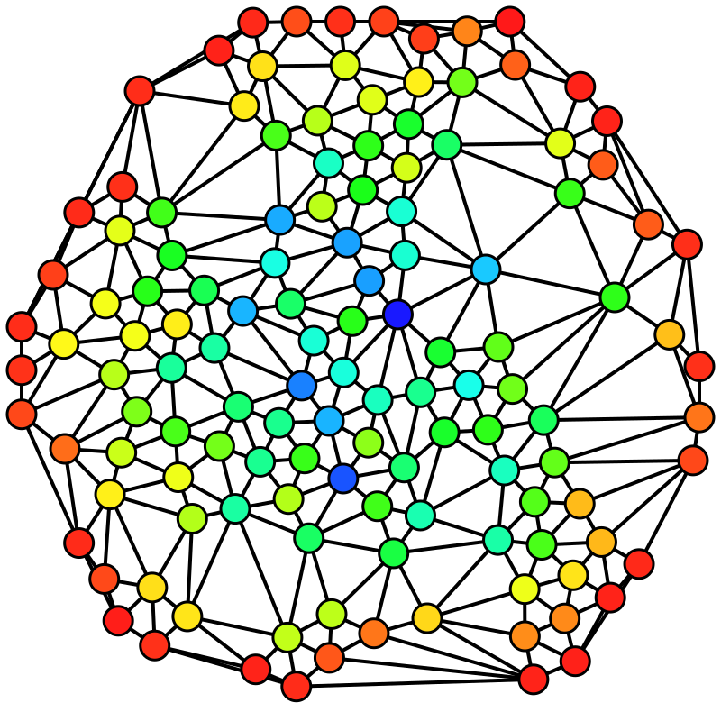

Mathematics
Mathematics :
Algebra :
Geometry :
3D space :
Rotating 3D shapes forumlas and example code (javascript ?)
Quaternions :
Quaternions, vectors and matrices for 3D space - applied for processing
How to handle quaterions and use them if you are not mathematician
Visualized quaternions video (3Blue1Brown) and INTERACTIVE VIDEOS : Ben eater's website eater.net
Theory of information :
-
Shannon entropy ref
In information theory, the entropy of a random variable is the average level of "information", "surprise", or "uncertainty" inherent in the variable's possible outcomes.
Graph theory :
A very simplified explanation of it and the many uses in the real world
Used for arborescence and "tree" of possibilities. amongst other uses
Key concepts :
- Centrality :
Indicators of centrality assign numbers or rankings to nodes within a graph corresponding to their network position. ref
-
Betweenness centrality :
Or short : EBC for edges - NBC for nodes

An undirected graph colored based on the betweenness centrality of each vertex from least (red) to greatest (blue).
For every pair of vertices in a connected graph, there exists at least one shortest path between the vertices such that either the number of edges that the path passes through (for unweighted graphs) or the sum of the weights of the edges (for weighted graphs) is minimized. The betweenness centrality for each vertex is the number of these shortest paths that pass through the vertex ref
-
Communities :
A network is said to have community structure if the nodes of the network can be easily grouped into (potentially overlapping) sets of nodes such that each set of nodes is densely connected internally. ref
-
Detection :
Using EBC as edges weights
(a) Agglomerative Methods
In agglomerative methods, we start with an empty graph that consists of nodes of the original graph but no edges. Next, the edges are added one-by-one to the graph, starting from “stronger” to “weaker” edges. This strength of the edge, or the weight of the edge, can be calculated in different ways.
Don’t worry – we will discuss this later. Keep in mind that new communities are formed in the consecutive steps of the algorithm.
(b) Divisive Methods
In divisive methods, we go the other way round. We start with the complete graph and take off the edges iteratively. The edge with the highest weight is removed first. At every step, the edge-weight calculation is repeated, since the weight of the remaining edges changes after an edge is removed. After a certain number of steps, we get clusters of densely connected nodes.
The Girvan-Newman algorithm is an example of the divisive method.
Community detection using EBC and the Girvan-Newman algorithm.
-
-
Adjacency matrix a representation of a graph in a matricial calculation way
Deep learning and graph theory for connectivity analysis
Interesting concepts :
-
A classical approach to spike sorting using PCAs ref Yannis Liapis's github website
-
est l'intervalle de fréquences dans lequel l'affaiblissement du signal est inférieur à une valeur spécifiée (CEI).
C'est une façon sommaire de caractériser la gamme de fréquences qu'un système peut raisonnablement traiter
Par analogie, dans le domaine des réseaux informatiques, spécialement les accès à internet à haut débit, on utilise le terme bande passante pour désigner le débit binaire maximal d'une voie de transmission.
-
une fonction de transfert est un modèle mathématique de la relation entre l'entrée et la sortie d'un système linéaire
-
Dynamic time warping DTW : comparison of two time series that may be shifted in time or scaled differently in time. ref
- Comparison paper with another strategy for comparing time series based on "features" extraction ref
Application for the same kind of need for images :
-
Image registration :

- Image obtained with the great software Twibright registrator http://ronja.twibright.com/registrator.php
-
diffeomorphic mapping (diffeomorphometry) :
-
Image Edge detection ref
-
Filtre de Canny ref -


Le filtre de Canny (ou détecteur de Canny) est utilisé en traitement d'images pour la détection des contours.
.PNG?uselang=fr)
.PNG?uselang=fr)
Ordre de magnitude : ref
In words (long scale) In words (short scale) Prefix (Symbol) Decimal Power of ten Order of magnitude tenth tenth deci- (d) 0.1 10−1 −1 one one 1 100 0 ten ten deca- (da) 10 101 1 hundred hundred hecto- (h) 100 102 2 thousand thousand kilo- (k) 1000 103 3
Attracteur de lorenz - Fractales - Ensemble de Julia et de Fatou - Dimension de Hausdorff
Inverse kinematics - to detemine the position of a point in space with rigid bodies with various degrees of liberties tethered to that point
Position des opérandes différente de la notation classique
« 3 × (4 + 7) » peut s'écrire en NPI sous la forme « 4 (enter) 7 + 3 × »